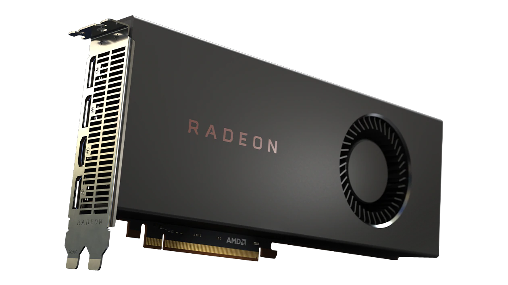
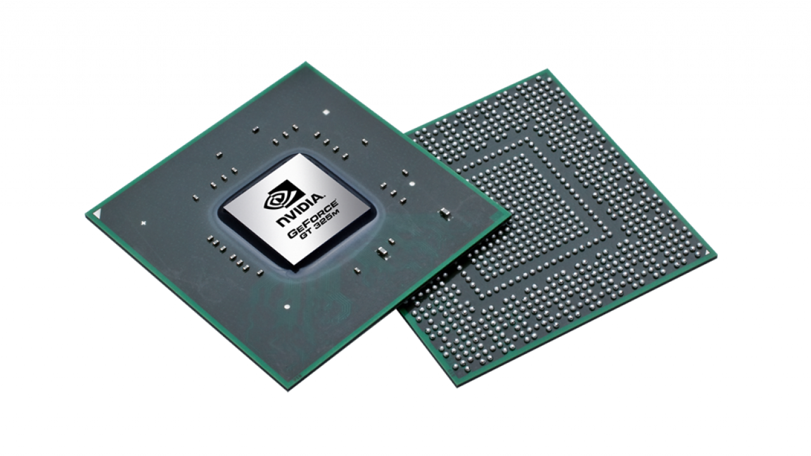
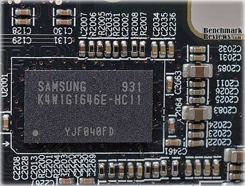
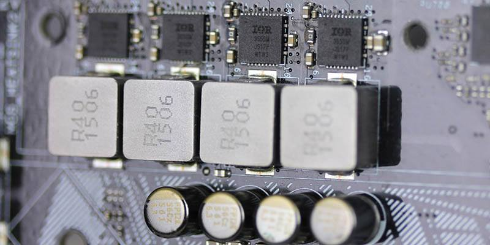
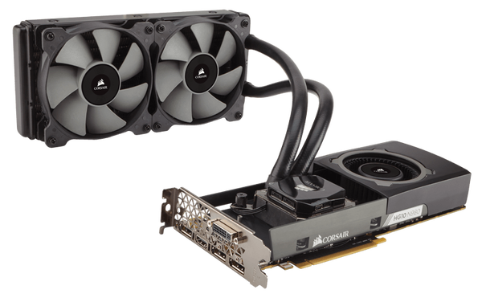
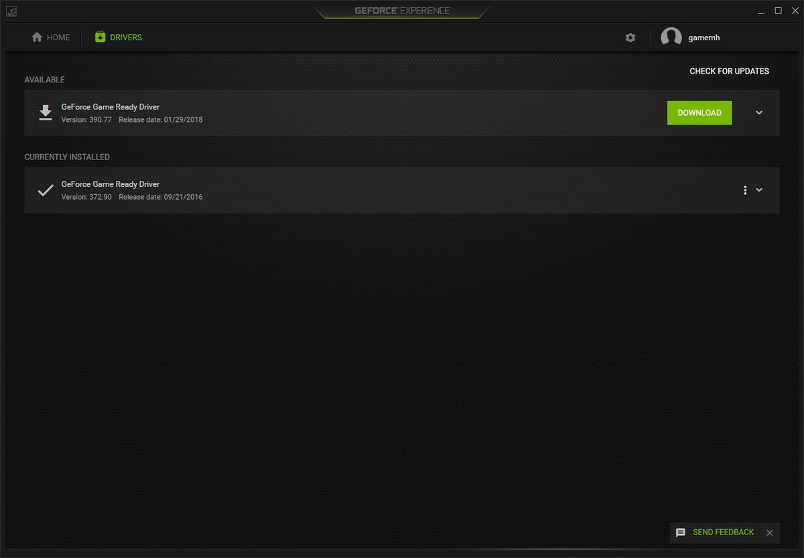

Placas Gráficas
O que são
Uma visualização detalhada sobre as funções e componentes de uma Placa Gráfica
Introdução
As Placas Gráficas foram criadas com a finalidade de transformar a informação digital processada em uma imagem representada no monitor, sendo por isso responsável por todo o conteúdo visual e, consequentemente, necessária e presente em todos os computadores de forma a que possa ser transmitida uma imagem com a informação recolhida (salvo exceções de processadores com GPU integrada).
 O uso das Placas
Gráficas varia conforme a função que for designada, podendo servir
apenas para tarefas simples como trabalhar em programas básicos, visualizar
fotografias ou vídeos, ou uma simples pesquisa na internet, até atividades que
requerem um maior desempenho gráfico como em videojogos, programas de
edição de imagem mais pesados, renderização 3D.
O uso das Placas
Gráficas varia conforme a função que for designada, podendo servir
apenas para tarefas simples como trabalhar em programas básicos, visualizar
fotografias ou vídeos, ou uma simples pesquisa na internet, até atividades que
requerem um maior desempenho gráfico como em videojogos, programas de
edição de imagem mais pesados, renderização 3D.
Componentes e Funções
As Placas de Vídeo possuem componentes, cada um com a sua função, que vão então ler a informação e transmiti-la ao utilizador e muito mais.
GPU

A GPU é o componente mais importante e o coração da placa gráfica, este
componente faz todo o processamento na placa de vídeo. Geralmente, a maioria
das placas gráficas possuem apenas um GPU mas existem placas gráficas com
mais do que um GPU.
A GPU funciona de acordo com a sua arquitetura e esta varia de série para
série e de fabricante para fabricante.
Há milhares de cores dentro das GPU’s
para processamento paralelo e multi-tasking e estes cores trabalham de forma
diferente, dependendo da respetiva arquitetura.
Geralmente, quanto mais recente for a arquitetura da GPU,
mais performance e menos consumo de energia terá a placa de vídeo.
O seguinte gráfico apresenta a diferente quantidade de CUDA Cores (no caso da NVIDIA) ou Stream Processors (no caso da AMD) nas Placas Gráficas mais relevantes atualmente.
VRAM

Este componente é o segundo mais importante de uma placa de Vídeo.
Video
Random Access Memory (VRAM) é onde todos os dados gráficos e textura
de jogos são armazenados para serem processados pela Placa Gráfica.
É de notar que
maior velocidade da VRAM aumenta drasticamente a performance da Placa, mas
apenas se esta não for fraca e consiga acompanhar.
Memória por si própria
não aumenta o desempenho da Placa Gráfica. Há vários tipos de VRAM disponíveis para Placas de
Vídeo dependendo na
velocidade e banda larga que oferecem.
A DDR3 é a mais antiga e consequentemente, a mais
lenta, utilizada em
PG’s de baixa gama. A GDDR5 é a mais popular e utilizada em Placas Gráficas de média
gama. A GDDR6X é utilizada nas Placas de topo de gama da Nvidia.
VRM

Talvez o terceiro componente mais importante da Placa Gráfica, o Módulo regulador de
voltagem ou ,Voltage Regulator Module (VRM), é o circuito que fornece energia
à GPU.
O VRM converte a voltagem de grande nível(12V) proveniente da
Fonte de Alimentação para níveis mais baixos de
voltagem(1 a 1,5V), visto que a Placa de Vídeo opera nestes níveis de tensão. O número de
Reguladores de Voltagem numa Placa de Vídeo variam de produto para produto, dado que há GPU's
com
diferentes graus de performance e
com necessidades de energia diferentes.
VRM’s podem chegar a temperaturas ainda maiores que
a
GPU, sendo necessários agentes de refrigeração para
prevenir danos permanentes à Placa Gráfica.
Cooler

Todas as placas de vídeo possuem um tipo de Cooler para dissipar o calor e
manter as temperaturas da GPU, VRAM e VRM em níveis seguros. Os Coolers
podem ser considerados ativos ou passivos.
Os Coolers ativos possuem um
heatsink e ventoinha enquanto que os Coolers passivos possuem apenas
o heatsink. Existem também Water Coolers, ou seja, Coolers que arrefecem o
sistema através do uso de água e geralmente são encontrados nos sistemas do mais alto
nível.
A maioria das GPU'S apresentam Coolers do tipo ativo,
porque geralmente,
requerem menos espaço e produzem melhor dissipação de calor, enquanto que
Cooling passivo é utilizado em Placas Gráficas de baixa qualidade e é completamente
silencioso a realizar a sua função.
Controlador

O Controlador, ou driver, é essencialmente software que trata da comunicação
entre o sistema operativo, videojogos e aplicações e a Placa de Vídeo.
É extremamente importante que todas as Placas de Vídeo tenham este software instalado e
atualizado para assegurar que a Placa Gráfica esteja a funcionar como é
suposto e para evitar o encontro de erros.